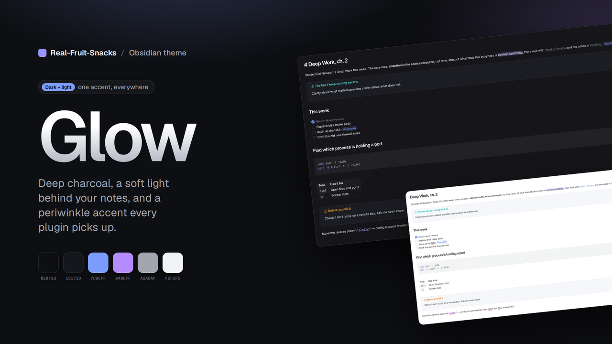

Glow gives Obsidian deep charcoal surfaces, a soft radial glow behind your notes, and one periwinkle accent that every plugin picks up. Nothing shouting.

Built on Obsidian's own CSS variables, so it stays compatible as Obsidian and your plugins update.
Geist if you have it, system fonts if not. Gradient note titles, comfortable line height, tighter headings.
Set through Obsidian's accent variables, so links, selections, checkboxes and plugin UI all match.
Modals, menus, callouts and code blocks share the same 1px hairline and radius.
A full syntax colour set tuned for the dark surface, with a matching light variant.
Same family, same accent, white surfaces. Switch with Obsidian's normal toggle.
Toolbars and navigation bars styled to match on iOS and Android.
From the community list, or two files by hand.
theme.css and manifest.json from the latest release into .obsidian/themes/Glow/, then pick it under Appearance..obsidian/
themes/
Glow/
theme.css
manifest.jsonSix roles, two modes.
| Role | Dark | Light |
|---|---|---|
| Background | #0E0F13 | #FFFFFF |
| Surface | #15171D | #F3F4F8 |
| Text | #F2F3F5 | #14161C |
| Muted | #A2A6AF | #5A5F6B |
| Accent | #7C9CFF | #4767F0 |
| Accent 2 | #B48CFF | #7E4FE0 |
Same site, a different glow per project.